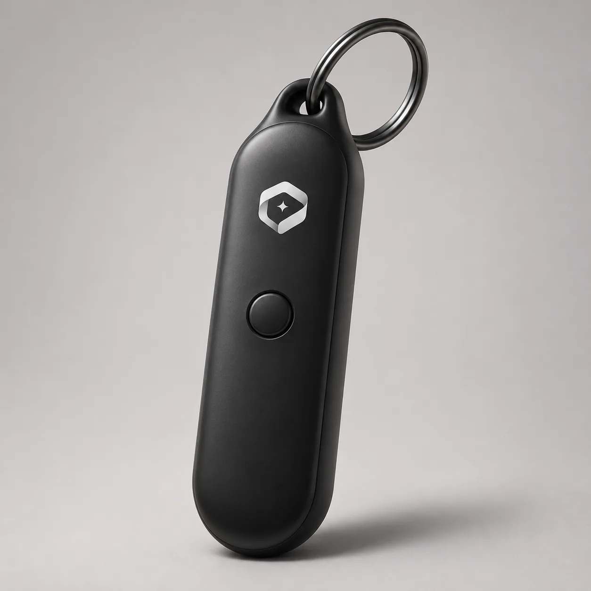
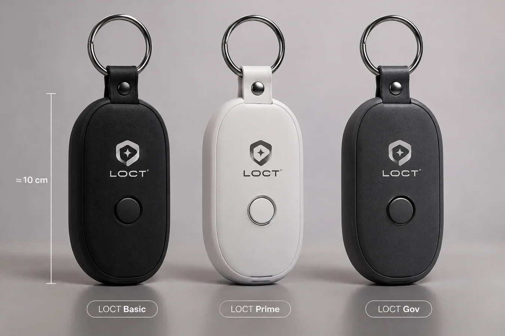
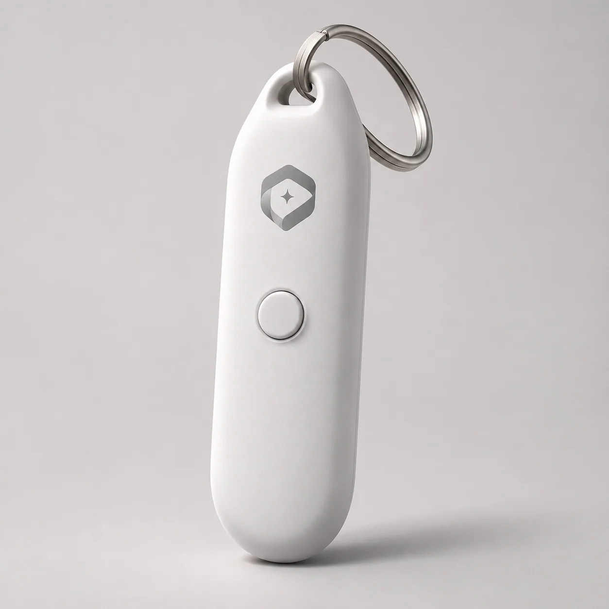
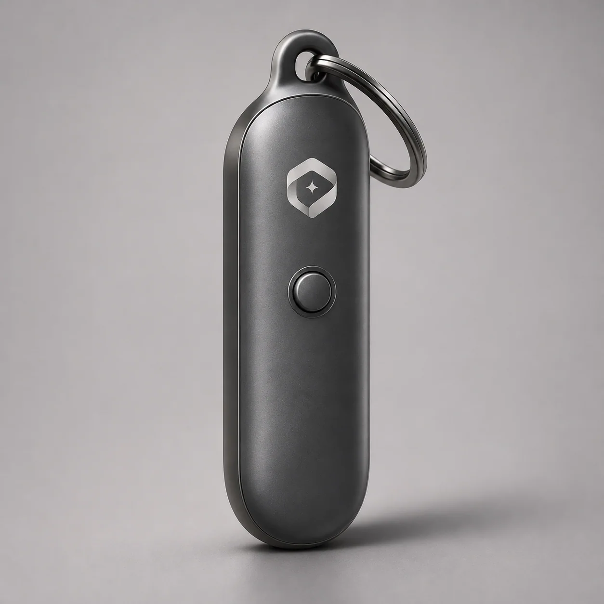
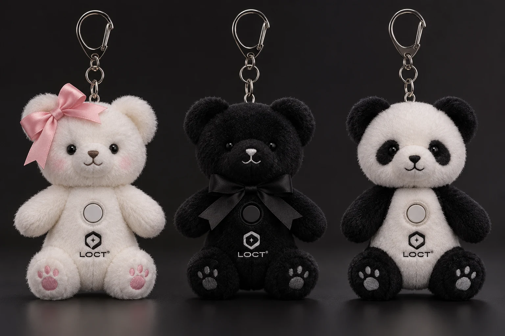
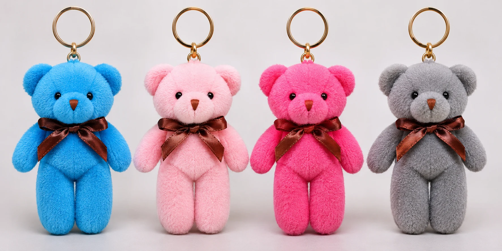
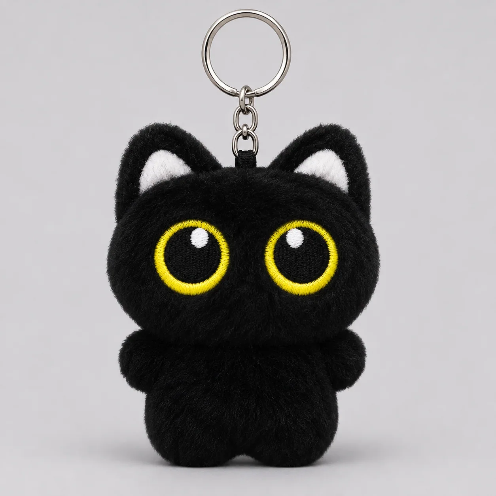

EM DESENVOLVIMENTO

Um detalhe no seu estilo. Uma conexão com quem importa.
DESIGN LOCT · TECNOLOGIA EM DESENVOLVIMENTO
Explore as duas coleções da LOCT: a identidade premium da marca ou acessórios discretos para o dia a dia. Produtos em desenvolvimento.






* Imagens conceituais. Nenhum produto está disponível para compra nesta versão da loja.
Nenhum modelo encontrado. Tente outro termo.
Chaveiros minimalistas e ursinhos com o escudo e a estrela LOCT. Uma coleção de acabamento sofisticado, em que cada detalhe expressa a beleza da marca.
Ver coleção ↗Ursinhos coloridos e um gatinho de pelúcia com aparência de acessórios comuns. Design delicado e discreto para acompanhar sua rotina.
Ver coleção ↗O LOCT combina um módulo físico de emergência com um software de localização em tempo real, compartilhada com pessoas de confiança. O objetivo é conectar a pessoa à sua rede de confiança para compartilhar sua localização e emitir pedidos de ajuda de forma prática e discreta.
A plataforma web de alertas já possui um protótipo funcional. A integração com o módulo físico, o GPS em tempo real e as notificações em segundo plano ainda estão em desenvolvimento e testes.
Estudamos parcerias com instituições de ensino e órgãos públicos para ampliar o acesso à tecnologia de segurança pessoal.
Programa institucional em planejamento · Sem parcerias firmadas